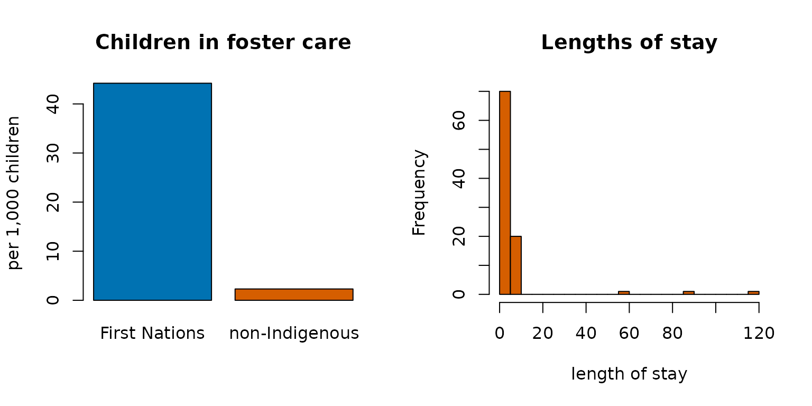

Stock and flow: population, admissions and length of stay
Source:vignettes/stock-and-flow.Rmd
stock-and-flow.RmdA custodial or clinical population can be described two ways: the stock (how many are held on an average day) and the flow (how many pass through in a period). The two are linked by the length of stay, and a published table that reports one without the others is easy to misread. These functions implement the standard measures (Lakner’s formulation, as used in the Canadian corrections statistics) with exact intervals.
Average daily population
The stock. Detention days in a period divided by the days in the period:
# Lakner's worked example: 3,000 inmates served 13,500 detention days in a year
adp(13500)
#> [1] 36.9863
# per-person days over a 30-day period give the same total
adp(c(10, 20, 30), t = 30)
#> [1] 2adpcnts() estimates person-days from periodic headcounts
(a monthly census) when daily data are not published.
Average length of stay
Detention days divided by the number of people who completed a stay:
# Lakner: 2,700 inmates admitted and released served 12,150 detention days
alos(12150, 2700)
#> [1] 4.5Admissions implied by stock and stay
Little’s law ties the three together: in a stationary system, stock = flow × stay, so admissions = ADP × days / ALOS. Lakner (p. 20) runs it the other way: an average daily population of 25 and 1,750 admissions in a year imply a stay of 5.2 days, and back again:
Stock and flow together
stkflow() takes detention days and people per period,
with an exposure (the population at risk) to turn counts into rates, and
reports how the stock, the flow and the stay moved between periods. The
pattern it is built to surface: fewer people, held
longer, so the flow falls while the stock rises.
stkflow(
days = c(115674, 126121), people = c(12647, 9608),
prd = c("2023", "2025"),
expo = c(15495050, 16256538)
)
#> ── Stock and flow over 2 periods ─────────────────────────────────
#> period people days alos adp flowrate stkrate
#> 2023 12647 115674 9.146359 316.9151 81.61961 2.045267
#> 2025 9608 126121 13.126665 345.5370 59.10237 2.125526
#>
#> 2023 to 2025: people -24.0%, stay +43.5%, days +9.0%
#> flow rate -27.6%, stock rate +3.9% <- opposite signs: quote both
#> ──────────────────────────────────────────────────────────────────A table that reported only admissions would show a decline; one that reported only the daily count would show growth. Both are true, and the length of stay is the reason.
The distribution of stays
The mean stay is pulled far above the median by a few long stays, so the summary that matters is the whole distribution:
stays <- c(rep(1, 40), rep(3, 30), rep(10, 20), 60, 90, 120)
staysmry(stays)
#> n totaldays mean sd median iqr max se lower upper
#> 1 93 600 6.451613 16.33183 3 2 120 1.693532 3.088113 9.815113
staysmry(stays)[, c("mean", "median", "max")]
#> mean median max
#> 1 6.451613 3 120staysmry() gives the mean with its interval, the
quantiles and the maximum, so a report can say “half of stays were three
days or less, and the longest was 120” instead of “the average stay was
9.6 days”, which describes almost no one.
Indigenous examples
Stock and flow measures need counts of people and the days they spend in custody or care. The census excerpt bundled with the package counts foster children, a stock on census day:
cp <- indiex("censuspop")
fc <- cp[cp$GEO_NAME == "Canada" & cp$AGE_GROUP == "0 to 14 years" &
cp$RESIDENCE == "Total - Residence on or off reserve", ]
kids <- fc[grepl("Total - Children in census families", fc$CHARACTERISTIC_NAME),
c("FIRST_NATIONS", "NON_IND")]
fost <- fc[grepl("Foster children", fc$CHARACTERISTIC_NAME), c("FIRST_NATIONS", "NON_IND")]
round(100 * unlist(fost) / unlist(kids), 2)
#> FIRST_NATIONS NON_IND
#> 4.42 0.23Turning that stock into admissions and lengths of stay needs the flow data held by child welfare agencies.
The figures in a picture
The left panel puts the counts on a common footing: children in foster care per 1,000 children, First Nations and non-Indigenous, from the census tables above. The right panel shows how the lengths of stay are spread: most are short, a few are very long, which is why the mean and the median differ.
op <- par(mfrow = c(1, 2))
per1000 <- unlist(fost) / unlist(kids) * 1000
barplot(per1000, names.arg = c("First Nations", "non-Indigenous"), col = blpal()[1:2],
ylab = "per 1,000 children", main = "Children in foster care")
hist(stays, breaks = 30, col = blpal()[2], xlab = "length of stay", main = "Lengths of stay")
par(op)